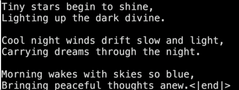
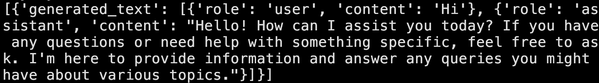

LLM Concepts
How do LLMs work?
At their core, LLMs are number predictors. You may have heard that they are next word predictors, fancy autocompletes, magic boxes, etc. Yes, they are, but at their core, they are number predictors.
Suppose you work at a weather API company, and you create a model that predicts tomorrow's temperature. That model has seen weather data for past many years, and based on the data, it looks at last week's temperatures, let's say they are 33, 35, 32, 38, 36 and 32 degree Celsius, and your model says that there's a 60% chance that tomorrow's temperature is 34 degree, 20% chance that it's 39 degree, etc.
This is exactly how LLMs work too!
Let's say we have an enormous corpus of words made up of words: [of, the, Vikram, class, is, in, lazy, tallest, home, a]
The text looks something like this:
Vikram is the ...
Let's randomly assign words to those numbers:
- 31: of
- 32: the
- 33: Vikram
- 34: class
- 35: is
- 36: in
- 37: lazy
- 38: tallest
- 39: home
- 40: a
And replace every word in the text corpus with its corresponding number. Now our text looks like 33 35 32...
All that we do now is treat these numbers as the "past year's temperature data" like we did in the weather API, and create a model that predicts what the tomorrow's temperature is, a.k.a., the next number. Let's say we get the response from model that it's 60% chance that the next number is 38, 20% chance that it's 37, etc.
If you've been following carefully, it's saying the same thing as, "It's 60% chance that the next word is tallest, 20% chance that the next word is lazy, etc."
What? It's that easy? Yes it is!
To recap clearly, here's what we do:
- Write each word from text corpus as a number, that's our dataset.
- Create a model that when given a sequence of numbers, predicts what the next number will be (more precisely, the probability of each number to be the next number) based on the numbers from the dataset.
- This is a crucial step: Based on the probabilities it sees, it does not simply pick the number with the highest probability. It randomly generates a number from the distribution based on its probability. Here, it's 60% probability that the number will be 38, 20% probability that the number will be 37.
- Convert the number back to the word and present that word as the output. Here, if the random number picked was 38, it'll output tallest as the answer.
But don't LLMs write entire paragraphs when given a simple prompt?
Yes, they certainly do, but before we go to that, try to come up yourself with the idea of how do they do that, based on the single word predictor that we just built.
Without going too much into detail, here are two things that go into creating fully working LLMs from our next word predictor:
-
Say the current sentence is "Today's weather". We run the model once, and append the output we got to the sentence, so our sentence becomes "Today's weather is". We then feed this newly generated sentence back into the model, so the sentence becomes "Today's weather is nice". Do that a lot more times, and you have your paragraph. LLMs literally get a text sample, predict next word, attach it to the text sample, predict next word, and so on. That's why on ChatGPT's website, you see one word come at a time.
This process is continued until we encounter an end symbol, which is our next point. -
There is a special word in our vocabulary now, called <|end|>. It has occurred a lot of times in our text corpus, and when our model predicts that the next word is <|end|>, it knows that it's time to stop now. That symbol isn't shown to the user, it's just for our code to know that it's time to end the word prediction loop. A visualization of it is shown below:

In code, it's implemented like this:
text = "Today's weather" while(True): next_word = predict_next_word(text) if next_word != "<|end|>": text += next_word elif next_word == "<|end|>": break return text -
Last thing before we wrap:
But LLMs answer the questions I ask them, not predict the next word.
This is achieved by something called system prompt.
When you ask LLM, "Write a poem in 10 lines", what's passed to the Next Word Predicting Loop is something like following:
This is a conversation between an AI assistant and a user.
User: Write a poem in 10 lines
AI Assistant:
And if you can guess, the autocomplete loop will write a poem as a response to this. Here's a visualization for it:

What are tokens?
Now you know that LLMs are next number predictors under the hood, where the numbers represent words. Well, not exactly words. The most common text sequences are called tokens. These may be words, subwords, symbols, or even whitespaces.
These most common text sequences are used to create a one-to-one mapping with numbers used in the next number predictor.
For example, the text:
"A quick brown fox jumped over a lazy dog" is a well-known sentence.
is tokenized under the hood into fragments and corresponding number IDs:
Text: " | A | quick | brown | fox | jumped | over | a | lazy | dog | " | is | a | well | - | known | sentence | .
IDs: 42 |32 | 2094 | 7586 | 21833 | 11629 | 625 |257 | 16139 | 3290 |42 | 318 |257 | 1854 |12 | 4432 | 10390 |13Few important points to note about tokens:
- If you send a request to an LLM, the text in your request is tokenized (converted to numbers); these are called input tokens. The tokens that the LLM generates (one at a time) are called output tokens.
- The whole LLM economics rely on input and output tokens. The pricing of models is measured in $/1 Million tokens. For subscriptions, your ability to use models is limited by a fixed number of input/output tokens.
- Tokenizing input tokens takes compute and so does producing output tokens. It takes a lot of compute to predict the next output token, and hence, it's much more expensive (often 2-5x) to predict output tokens.
Context Windows
You know that LLMs predict the next token based on previous tokens. The number of previous tokens that you can pass in a single request is limited, and is called the context length or context window of the model. It's measured in tokens. Higher the context length of the model, the more context you can provide about your query.
Technically, context length is not exactly the number of tokens you can pass to LLMs like Gemini, Claude or ChatGPT. As we saw earlier, the next token generator is given a base conversation (like 'This is a conversation between an AI assistant and a human'). Further, in models that support reasoning, reasoning notes take up tokens. So do system prompt and message history.
You can check an LLM's context length in their documentation. Some Gemini models are famous for having context lengths in excess of 1M tokens. While running locally, having higher context lengths takes up a lot of space in memory.
Needle in a Haystack Problem
Just because the context length for some models is very large doesn't mean you should pass enormous context to the model. It's important to send the model only relevant context for higher accuracy. Below is a graph of model performance vs context length conducted in a study:

This problem is called the Needle in a Haystack Problem.
Temperature & Determinism
When an LLM predicts the next token, it calculates raw score logits for every word in its vocabulary. A mathematical function converts these logits into probabilities. The Temperature parameter acts as a scale factor applied to the logits before calculation:
- Low Temperature (T close to 0): The model chooses the token with the absolute highest probability. This is called greedy decoding. It makes the model output predictable and focused. Ideal for coding, calculations, or writing clean JSON.
- High Temperature (T > 1.0): The probability distribution is flattened, allowing less expected tokens to be drawn. This makes the model more creative and random, but also prone to rambling.
Even at temperature 0, production APIs can show slight variations in output. This non-determinism is caused by GPU parallelization float operations, where small rounding variances occasionally flip the highest-probability token.
API Model Families
Selecting a model requires managing trade-offs between speed, cost, and intelligence. The three biggest model families are:
| Model Family | Examples | Context Window | Primary Strengths |
|---|---|---|---|
| Anthropic Claude | Claude 3.5 Sonnet, Claude 3.5 Haiku | 200,000 tokens | Code writing, logical reasoning, following strict system prompts. |
| OpenAI GPT | GPT-4o, GPT-4o-mini | 128,000 tokens | Low latency, robust tool use/function calling. |
| Google Gemini | Gemini 1.5 Pro, Gemini 1.5 Flash | 2,000,000 tokens | Enormous context length, native audio/video multimodal processing, low cost. |
Using LLMs: Using APIs and Local LLMs
In this section, we will cover how to run LLMs locally and also how to make requests to cloud APIs.
Running LLM locally
Note that to run LLMs locally, it's recommended to have a dedicated GPU on your machine. If you don't have a good GPU on your computer, feel free to just read through the section without running the model locally.
To run an LLM locally, first install the transformers library and torch. Then create a python file and run:
from transformers import pipeline
pipe = pipeline("text-generation", model="Qwen/Qwen2.5-0.5B-Instruct")
messages = [
{"role": "user", "content": "Hi"},
]
result = pipe(messages)
print(result)
The output of the above code is shown below:

Using APIs for LLM
For most production applications, we use hosted model APIs. Below is a code example to call an LLM API using the OpenAI library (configured here for Groq, which offers free API access):
- Create an account at dashboard.groq.com.
- Create an API key in the dashboard and keep it secret.
- Save the API key in your environment variables as
GROQ_API_KEY. - Install the library:
pip install groq. - Run the code:
from groq import Groq
client = Groq()
chat_completion = client.chat.completions.create(
messages=[
{
"role": "user",
"content": "Hola, mi amigo! Como estas?",
}
],
model="llama-3.3-70b-versatile",
)
print(chat_completion.choices[0].message.content)
The output that we get in the terminal is as below:

LLM Limitations as Engineering Constraints
When writing application code, treat LLM limitations as system constraints:
- Hallucinations: The model generates false output with high confidence. Solve this by grounding prompts in reference documentation (RAG) and configuring low temperatures.
- Stale Knowledge: Models cannot access events past their training cutoff date. Solve by retrieving fresh data from databases or search APIs first, and feeding it into the prompt.
- Prompt Injection: Users write prompts targeting the underlying instructions. Protect against this by using separate system/user roles, validating user inputs, and verifying output formats.
- Non-Determinism: Different outputs on identical inputs. Mitigate by enforcing strict schemas (JSON mode) and setting temperature to 0.
Lab: First API Call
1. Problem Setup
You are building a cost-aware log summary utility for a server monitoring system. The challenge is to call an LLM API to extract key errors from a server log snippet, track token consumption, and calculate the exact API cost to prevent runaway bills.
2. Environment Setup
Install the necessary libraries in your python environment:
pip install openai python-dotenvCreate a .env file in your directory to hold your credentials:
OPENAI_API_KEY="your-actual-api-key"
# or if using Groq
GROQ_API_KEY="your-groq-key"3. Step-by-Step Instructions
- Initialize the client library (reads credentials from environment).
- Build the request structure: define a system message to parse log errors, and pass the logs in the user message.
- Set the temperature to 0 to ensure reliable logs extraction.
- Run the execution block and extract the summary text.
- Log usage data (
prompt_tokensandcompletion_tokens) and calculate the cost ($0.15/1M input tokens, $0.60/1M output tokens).
4. Starter Code
import os
from dotenv import load_dotenv
from openai import OpenAI
load_dotenv()
client = OpenAI()
log_data = """
2026-06-08 15:30:00 INFO Starting service...
2026-06-08 15:30:05 ERROR Database connection failed: Timeout expired.
2026-06-08 15:30:06 WARN Retrying database connection (attempt 1/3)...
2026-06-08 15:30:10 ERROR Database connection failed: Access denied for user 'root'.
2026-06-08 15:30:15 INFO Service running on port 8080.
"""
def summarize_logs(logs):
try:
response = client.chat.completions.create(
model="gpt-4o-mini",
messages=[
{
"role": "system",
"content": "You are a systems engineer. Extract all error messages from the provided log lines. Return a clean bulleted list."
},
{
"role": "user",
"content": logs
}
],
temperature=0.0
)
summary = response.choices[0].message.content
input_tokens = response.usage.prompt_tokens
output_tokens = response.usage.completion_tokens
# Calculate cost ($0.15/1M input, $0.60/1M output)
input_cost = (input_tokens / 1000000) * 0.15
output_cost = (output_tokens / 1000000) * 0.60
total_cost = input_cost + output_cost
print(f"--- Log Summary ---\n{summary}\n")
print(f"--- Usage Metadata ---")
print(f"Input Tokens: {input_tokens}")
print(f"Output Tokens: {output_tokens}")
print(f"Execution Cost: ${total_cost:.8f}")
except Exception as e:
print(f"API Error: {e}")
if __name__ == "__main__":
summarize_logs(log_data)5. Expected Output Sample
--- Log Summary ---
* Database connection failed: Timeout expired.
* Database connection failed: Access denied for user 'root'.
--- Usage Metadata ---
Input Tokens: 78
Output Tokens: 22
Execution Cost: $0.000024906. Failure Scenario
Corrupt your key inside the .env file. Execute the script and verify that the exception block catches the error and exits with API Error: AuthenticationError... rather than crashing.
7. Extension Challenge (Optional)
Implement a simple retry mechanism with exponential backoff if the API raises a rate limit or connection timeout warning.
8. Reflection Prompts
- Why is it important to track input and output tokens separately for billing?
- What are the pros and cons of using a model like Claude 3.5 Sonnet vs a smaller, cheaper model like Gemini 1.5 Flash for summarization tasks?
Notes
- You may come across the terms model parameters, or model weights. Both of them mean the same thing. In general, a model with higher number of parameters holds more information about the world than one with a lower number of parameters.
- In Hugging Face, you'll see file extensions for models as sometimes .safetensors, .gguf, .onnx, etc. Each file format needs a different pipeline under the hood to run it. It's recommended that you first look at the code provided in "Use this model" to run it locally.
- You'll come across a term called multimodal models. These are models that can take multiple forms of inputs, such as text, images, audio, documents, etc. Most LLMs that we'll use in server API calls are multimodal.
- You may come across a term called edge AI. It means to run ML models locally, not on remote cloud infrastructure. It may be on your phone/laptop, or smaller devices like smartwatches, earbuds, microcontrollers, etc. The opposite of edge AI is cloud AI or remote AI.